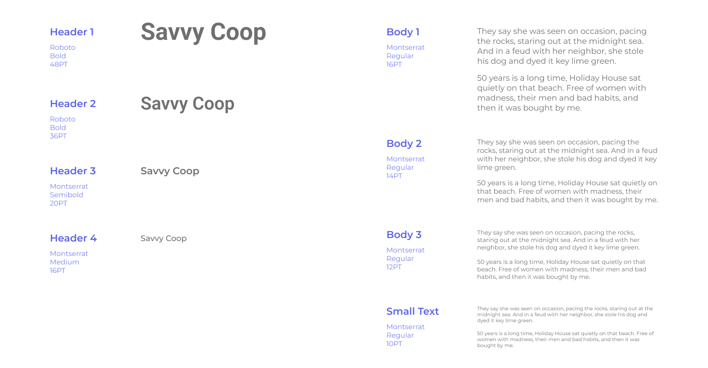
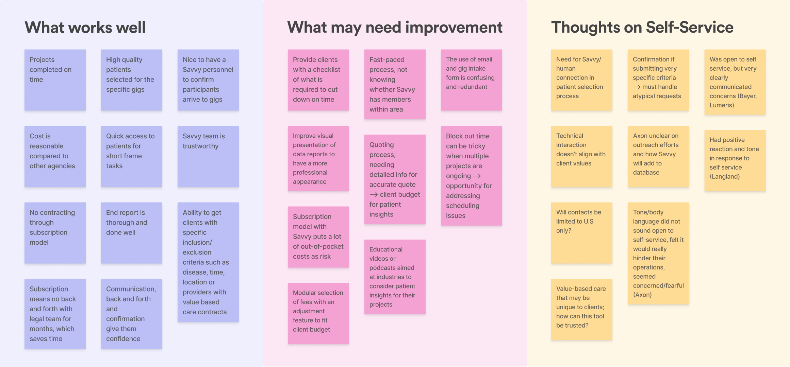

JAMES
HUA.
SAVVY
COOPERATIVE.
As a patient-owned co-op, Savvy Cooperative connects people with opportunities to share their health experiences with researchers. Our team developed a B2B portal to expand Savvy’s current capabilities to more pharmaceutical clients through self-service recruitment projects. As Savvy lack an in-house design team, it was necessary for our team to first be aligned internally on visuals and methods so that we could design consistent interfaces.
MY ROLE
Within this team, I established the UI Design System. This involved expanding current Savvy branding guidelines (colors & fonts) to align with web usability standards, creating modular assets (variables, styles, auto layout, components & variants) to keep up with best practices, and prototyping assets (hover & active states) to ensure seamless interaction.
TEAM
Sumaiya Elahi
Tanvi Jain
Kamayani Gupta
SKILLS
Typography
UI Design
Prototyping
PROGRAMS
Figma
TIMEFRAME
Apr.'23 -
Aug.'23
COLOR.
Expanded color palette to support user interface elements based on Savvy Cooperative’s original colors (300 series). Used for primary call-to-action, secondary call-to-action, accents, default state, hover state, active state and more.
TYPOGRAPHY.
Set of typography standardized and updated with layers of hierarchy for web accessibility and readability (body minimum 16pt) based on current Savvy Cooperative branding (Roboto + Montserrat).
SPACING.
Three groups of spaces to determine the distance within elements and between elements, big or small. Used for everything from icons to text, components to composition.
BUTTONS.
Simple set of buttons with several states (default, hover, active, disabled) for different actions. Some are used for call-to-action, others as menus. Button sets are are customizable with text, left & right icons, visibility of each icon and state.
FORM
FIELDS.
Text-input boxes, filters and dropdown menus to support various types of data entry across the platform. Similar to buttons, each type has default, hover and active states.

ASSETS
& COMPONENTS.
More complex components constructed from buttons, fields and more. These are commonly repeated elements in the portal interface that benefit from being componentized.

SAMPLE
INTERFACES.
Adhering to this system, my team and I were able to successfully delegate tasks and translate our research insights into usable features that provided a consistent visual experience across the board.
IMPACT
& RESULTS.
☆ Design system basics conform to current branding and expands it to be web accessible and usable.
☆ Standardization aids communication between our team, engineers, and contractors through common visual language.
☆ Modular and reusable component library supports capabilities in future projects with new hires.
REFLECTIONS.
This was my first time designing a comprehensive user interface system from scratch and it won’t be my last! I learned a lot about old and new Figma features. I especially loved creating buttons that tons of variations: swapping icons, changing text and turning on visibility; I also enjoyed getting comfortable using auto layout to easily set spacing between elements. Creating tons of color and text styles is an area of detailed work in which I feel confident diving deep into more. In the future, I plan to explore variables and booleans as they apply to prototyping states.